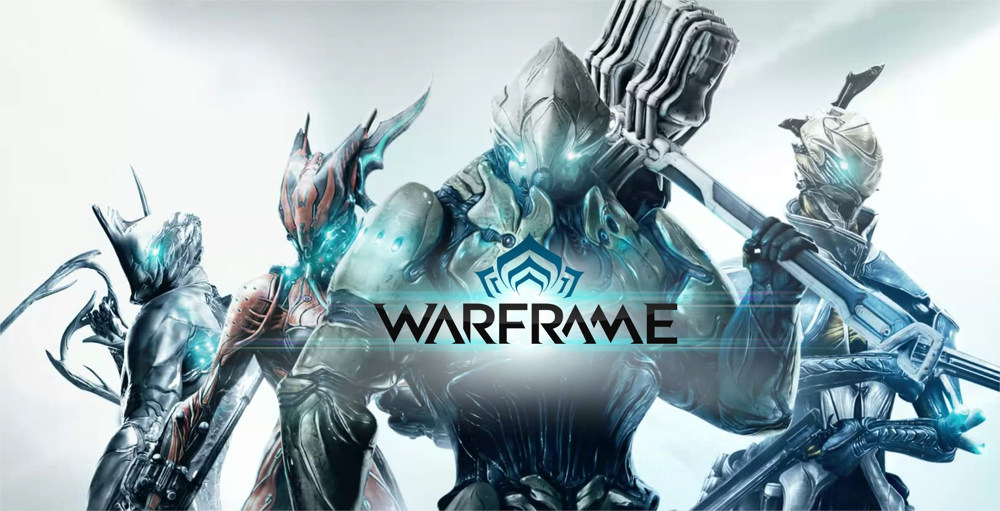
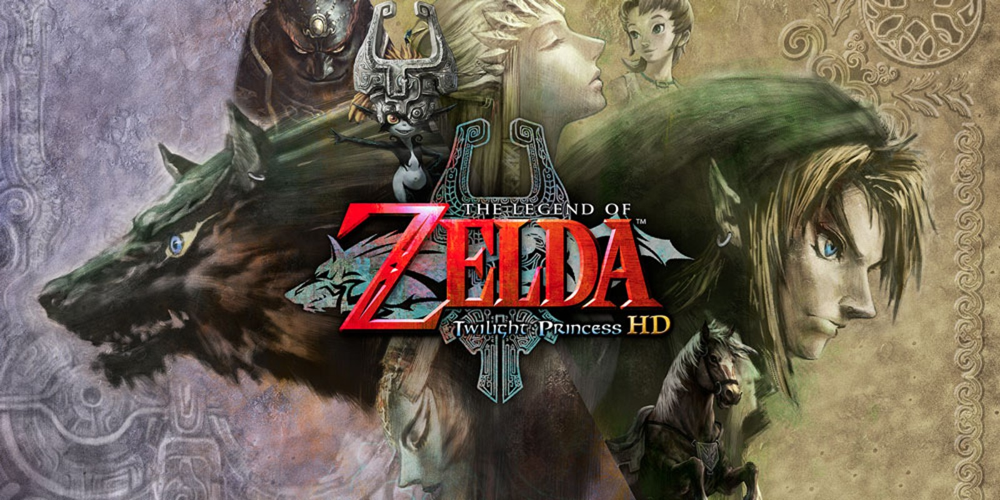

| Minecraaft |
Minecraft es un videojuego tipo sandbox, su traducción literal
sería “caja de arena” y es lo que representa la experiencia de
juego. Los jugadores pueden modelar el mundo a su gusto, destruir
y construir, como si estuviesen jugando en una caja de arena.
|
|
| Warframe |
Warframe es un videojuego de disparos en tercera persona gratuito
de modalidad jugador contra entorno individual o cooperativo,
aunque posee una modalidad jugador contra jugador en los modos de
juego conocidos como Cónclave, y Lunaro.
|

|
| The Legend of Zelda Twilight Princess |
The Legend of Zelda: Twilight Princess es un videojuego de
acción-aventura de 2006 desarrollado por la filial EAD y
distribuido por Nintendo para las videoconsolas GameCube y Wii.
Es el decimotercer lanzamiento de la franquicia The Legend of
Zelda y el undécimo juego de su línea principal.

|
|